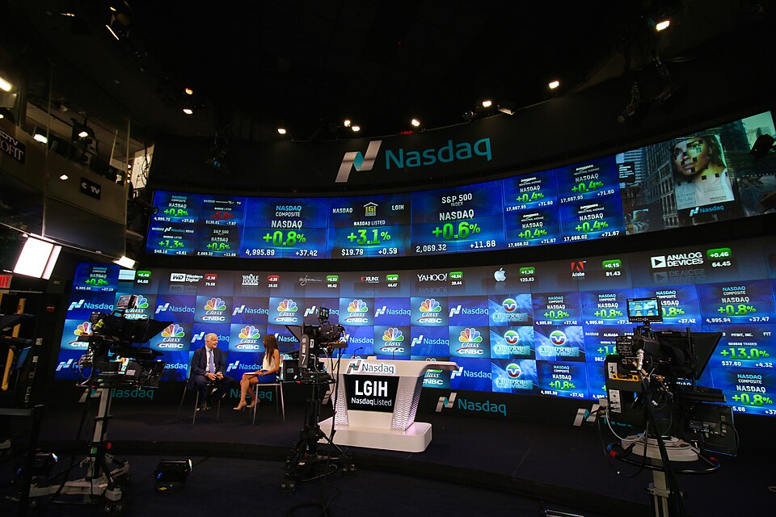

Ownership figures are my own calculations. I started from the principal-stockholder table in Anthropic's amended S-1 (filed 10 November 2026, holdings as of 30 September 2026) and updated it for the final deal in Anthropic's 18 November pricing release: 956.4 million new shares, $83 a share, and a $26 billion private placement at the same price. They assume the underwriters don't buy their 147 million optional extra shares. The final prospectus may differ slightly. "Fully diluted" counts options, unvested stock awards and Amazon's unconverted notes. ANT began trading on Nasdaq on 19 November 2026. The day-one and later prices mentioned below will keep changing; this is a snapshot, not a live feed, and not investment advice.
Key findings
- Anthropic sold 980 million shares at $83, above its $70–78 range, raising $81.3 billion, the largest IPO on record. That values it at about $1.5 trillion fully diluted.
- Amazon (about 14.5%) and Google (about 13.4%) are the biggest shareholders, worth roughly $159 billion and $147 billion at $83. Their shares carry no votes.
- The seven co-founders own about 1.8% each (roughly $20 billion apiece), but a single Class F share gives them 50.1% of every shareholder vote. A separate trust elects a majority of the board.
- Only about 7% of the company is trading. Some 15.5 billion locked-up shares become free to sell in about 25 waves over the next year.
Part 1The biggest IPO ever
On the evening of 18 November 2026, Anthropic set the price of its first public shares at $83 each. A week earlier it had told investors to expect $70 to $78. Demand was strong enough that it raised the price and sold more shares too: 980 million instead of 825 million.
Do the multiplication and you get $81.3 billion, the biggest initial public offering on record. CNBC reports it tops SpaceX's listing in June. The stock starts trading on Nasdaq under the ticker ANT.
Not all of that money goes to the company. Of the 980 million shares, 956.4 million are new shares created by Anthropic, worth about $79.4 billion. The other 23.6 million come from the seven co-founders, who are each selling 3,378,378 shares, or about $280 million each. Their money goes to them, not to Anthropic.

Alongside the IPO, a group of chip and cloud companies agreed to buy $26 billion of shares directly from Anthropic at the IPO price. Google and Nvidia are putting in $10 billion each. AMD, Broadcom, Micron, Microsoft and TSMC split the rest. At $83, that's about 313 million more shares, and they aren't sold to the public.
Part 2Who owns what
The filing lists the big holders, and some of the numbers are startling. Here is the whole company split into 100 squares, each worth about 1%. Switch between who owns the shares and who gets to vote.
Three things stand out.
The two cloud giants own more than the founders. Amazon will hold 1.92 billion shares, about 14.5% of the company. Google will hold about 1.77 billion, around 13.4%, including the shares it is buying in the placement. Both bought in early through loans that turned into shares. Amazon's notes, TechCrunch reports, convert at about $2.09 or $5.05 a share. At $83, the cheaper ones are worth roughly 40 times what Amazon paid.
Amazon could own even more. It still holds notes that would convert into another 1.56 billion shares, but it can't convert them yet without going over an ownership cap in its agreement. If it converted everything, it would own nearly a quarter of Anthropic.
The company gave 5% of itself away. Before the IPO, Anthropic put 846.8 million shares into the Anthropic Public Benefit Fund, a subsidiary that funds its stated mission. At $83, that's about $70 billion. The board can top it up by up to 2% more at a time.
| Holder | Class | Shares | % owned | Value at $83 | % of votes |
|---|
Part 3Owning isn't controlling
Here's the twist. Amazon and Google own more than a quarter of Anthropic and get no votes at all. Their shares are a special kind, Class N, that pays out like ordinary shares but can't vote. If they ever sell, the shares turn into normal voting stock in the buyer's hands.
Meanwhile, the seven co-founders hold a single share between them, through a company called the Founder LLC. It's a Class F share, and it carries 50.1% of the votes on almost everything shareholders decide. Everyone who owns ordinary Class A shares, including the people buying in the IPO, splits the other 49.9%.
Ordinary members each get a small ballot. The founders hold one giant ballot that always outweighs everyone else put together. The two richest backers paid for a big share of the club, but they came without ballots. And a trustee holds a separate key: the right to pick most of the board.
That trustee is the Long-Term Benefit Trust, a group of five people with no financial stake in the company. It holds one Class T share, which lets it elect and remove a majority of the board. So the founders control shareholder votes, and the trust controls who sits on most of the board. Anthropic is a public benefit corporation, so its board must weigh its mission alongside profit.
The founders' grip is tighter than 50.1%. They also own Class A shares, about 1.67 billion between them, which carry roughly 11% of the votes on top of the founder share. Under Nasdaq's rules, that makes Anthropic a "controlled company", which lets it skip some of the usual requirements for independent directors.
Part 4Where the $81 billion goes
Anthropic is raising this money because building frontier AI costs a fortune, and its revenue is growing faster than almost any company in history. The S-1 reported $16.3 billion of revenue in the first half of 2026, up from $1.2 billion a year earlier. The second quarter alone brought in $11.6 billion, and it was its first quarter with an operating profit.
The net loss looks catastrophic until you see what makes it up. Anthropic's actual operations ran at a small profit for the half-year; the loss is almost entirely a paper charge. This bridge walks from the one to the other.
The filing is vague about exactly how the money will be spent: "general corporate purposes", including investment in computing power and infrastructure, and hiring. One specific item stands out. When Anthropic's employee stock awards turn into real shares at the IPO, the company has to pay the tax it withholds on them. At the midpoint price that was $3.8 billion. At $83, by the filing's own sensitivity figure, it's about $4.3 billion.
Here's the full flow of money.
Stacking the same figures into a waterfall shows how the cash into Anthropic builds up to the full deal size.
Part 5What is a share worth?
$83 was only the starting point. Trading opened on 19 November, and from that moment the market, not the bankers, sets the price. To see what different prices would mean for the company and its biggest holders, drag the slider. The markers show prices implied by Anthropic's earlier funding rounds and by the IPO range.
At $83, investors are paying about 32 times Anthropic's current yearly revenue rate. That's expensive by normal standards, but the revenue is growing more than tenfold a year. If growth slows, that multiple will look very high. If it doesn't, it could look cheap.
Look at the markers too. In February, investors in the Series G round paid a price worth about $21 per share in today's terms. In May, at the $965 billion round, it was about $53. Some IPO watchers had talked about a $2 trillion valuation, about $111 a share. The IPO came in between.
Amazon and Google own a quarter of the company. Seven people and one trust run it.
Part 6What happens next
The IPO wasn't one event. It's the start of a year in which most of the company's shares slowly become sellable. Trading has begun; the rest of the sequence, from the filing, is still ahead.
Day one, now done. On 19 November, Nasdaq ran an opening auction to find the first trading price, which could land well above or below $83. Up to 20% of the shares had been set aside for retail investors, TechCrunch reported. For 30 days after the debut, the banks can still buy 147 million extra shares, which they use to steady the price if it sags.
The lock-up. Almost everyone who owned shares before the IPO agreed not to sell for a while. That covers about 15.5 billion shares, counting Amazon's unconverted notes and unvested staff awards. Most are locked for 180 days; the co-founders and other large holders for up to 365. But instead of one big release date, Anthropic staggered it into small waves. Some are tied to when it reports earnings.
The biggest single wave, up to 3 billion shares, comes after the first-quarter 2027 results or at day 180, whichever is first. That's three times the entire IPO. Unlock dates often put pressure on a stock's price, because some holders sell. Not all will: Amazon and Google are strategic partners, and the co-founders have pledged 80% of their equity to charity.
Other shares that can appear later: Amazon's 1.56 billion note shares, more Class N shares for the Public Benefit Fund (up to 2% at a time), and new stock awards for staff. Each adds shares and dilutes existing holders a little. The first earnings report as a public company, for the 2026 full year, is the next big test.
Part 7How we got here
- 2021Seven former OpenAI staff, led by siblings Dario and Daniela Amodei, found Anthropic as a public benefit corporation.
- 2023–24Amazon and Google invest through notes that can turn into shares. Amazon's convert at about $2.09 and $5.05 a share.
- Mar 2025Series E round values Anthropic at $61.5 billion.$61.5B
- Sep 2025Series F: $13 billion at a $183 billion valuation.$183B
- Feb 2026Series G: $30 billion at $380 billion.$380B
- May 2026A new round values it at $965 billion.$965B
- 1 Jun 2026Anthropic files for an IPO confidentially.
- 26 Oct 2026The S-1 goes public: ticker ANT, Nasdaq.
- 10 Nov 2026Roadshow starts: 825 million shares at $70–78.
- 18 Nov 2026Priced at $83, upsized to 980 million shares. $81.3 billion raised.~$1.5T
- 19 Nov 2026ANT starts trading on Nasdaq. The market takes over from the bankers.
- 20 Nov 2026You are here. Now the one-year unlock calendar begins to run.
If you're thinking about the stock, ask yourself two things first.
Am I comfortable owning a company where my vote can't change anything?
What happens to the price when billions of locked shares become sellable?
NotesSources
Each number and where it comes from.
- Final price, share count (956,351,354 new; 23,648,646 from selling stockholders), 147 million share option, Nasdaq "ANT", first trade 19 November: Anthropic, pricing release (18 Nov 2026). Original 825 million shares at $70–78: Anthropic, roadshow release (10 Nov 2026). S-1 filing: Anthropic (26 Oct 2026).
- Principal and selling stockholders, Class A/N/F/T rights, Amazon's 1.92 billion shares and 1.56 billion unconverted note shares, Google's 1.65 billion shares, the Public Benefit Fund's 846.8 million shares, lock-up schedule, use of proceeds and the $3.8 billion tax figure: Anthropic, amended S-1 (SEC EDGAR).
- $81.3 billion raised, record size, about $1.5 trillion fully diluted, co-founders' share sale: CNBC; ABC News; CBS News.
- $26 billion placement and its buyers, up to 20% for retail, $965 billion May round, $1.404 trillion at the top of the range: TechCrunch (10 Nov). Amazon 14.7%, Google 13.7%, Amazon's note conversion prices and 23.8% fully converted: TechCrunch (17 Nov). Its percentages use the $74 midpoint, so mine at $83 differ slightly.
- Founder LLC, Long-Term Benefit Trust, controlled-company status, co-founders' 80% pledge: Commons Capital.
- Revenue, operating income and net loss figures from the S-1: The VC Corner.
- Earlier rounds: Series E and Series F (Anthropic); Series G (Pulse 2.0).
Educational only. Not investment, legal or tax advice, and not a recommendation to buy or sell any security. Trading is now live and prices move constantly; the figures here are a snapshot from the IPO and will be revised as the final prospectus and later filings come in.